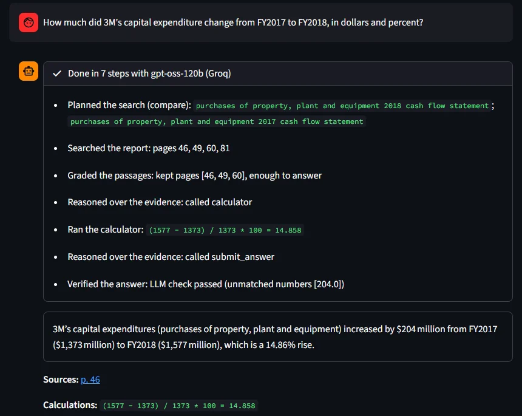

FinReport Agent
FEATURED · LIVEAnswers questions about company annual reports with the pages it used. A LangGraph agent plans its searches, checks it found the right passages, does every calculation with a calculator tool and verifies its numbers against the report before answering.
70%
numerical questions right with gpt-oss-120b (plain RAG: 50%)
66%
same questions with a 4B model on my laptop GPU (plain RAG: 36%)
145
held-out FinanceBench questions, both gains significant (p < 0.01)
- Hybrid search (bge-small embeddings + BM25, rank fusion) over 84 public filings, with page citations and full-page context so tables are never cut in half.
- LangGraph loop: plan, retrieve, grade, rewrite the search, reason with a calculator tool, then check every number against the source, or answer "I couldn't find this".
- Compared with plain RAG using a judge model from a different family. My first 30-question run overstated the gain for the large model; on all 145 it helps on numerical questions but not on qualitative ones, and I documented why.
- Built to survive free API tiers: saved runs, an answer cache, a four-model fallback chain and a per-visitor limit. Visitors can upload their own PDF.
